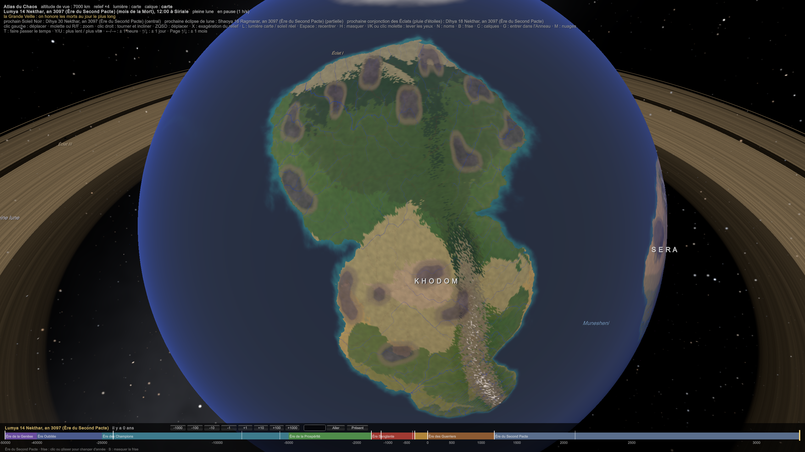

PLA-007 — Les climats régionaux : lecture et améliorations
Le cycle de l'étoile (11 ans, les Années Rouges, la Grande Conjonction) est gardé. Khodom est à l'ouest de Sera ; le Naora prend sa source sur le plateau de Zun'khel ; la tribu des Insectes vit dans la jungle (BIO-008).
« Pour ce qui est du climat, de la météo et du calendrier, je te laisse carte blanche tant que c'est logique, tu peux t'amuser. » (Races - Origine des Lumas (notes de l'auteur))
Adopté : les corrections (lignes de grains au lieu d'ouragans, Naora à 1 200–1 500 mm avec le delta en aval, hiver de 7–8 mois sur 10 dans la toundra, Désert de Brume sur la côte ouest de Khodom), la double crue du Naora né sur le plateau de Zun'khel, Zun'khel en Altiplano volcanique, la foudre qui cherche les mages, les anneaux d'anomalies autour du portail de Tawurt, le cycle de l'étoile (≈ 11 ans, Années Rouges, Grande Conjonction tous les 231 ans), l'Anneau et ses pluies de météorites, les parhélies de Maakar, le calendrier des monstres.
Reste à l'auteur : l'origine de l'Anneau, la position de Khodom par rapport à Sera (géographie), le lien entre le Désert de Brume et la Tribu des Insectes (races).
Sources. Climat - Sera, Climat - Khodom, Climat - Tawurt, Climat - Maakar. Elles sont comparées à SIM-02 Climat, SIM-05 Transport du Chaos et PLA-006 Calendrier et saisons.
Verdict général. Tes climats « naturels » sont très justes : la simulation retrouve presque tous tes chiffres. Ce qui manque, c'est une loi derrière les phénomènes du Chaos. Pour l'instant, chaque anomalie est une trouvaille isolée. Je propose de les rattacher à trois mécanismes physiques, ce qui les rend prévisibles, donc utilisables dans l'histoire.
1. Sera
Ce qui est juste
- Trois saisons, Ardeurs, Pluies, Brumes : c'est exactement le climat d'un pays tropical de mousson. Leurs durées totalisent bien 10 mois (PLA-006 Calendrier et saisons § 6).
- Les alizés de l'Est sur Arhamya et les vents humides de l'Ouest sur Kemazo et Vesha : c'est la circulation réelle de l'Afrique de l'Ouest (l'alizé du nord-est en saison sèche, la mousson du sud-ouest en saison des pluies). L'océan est donc à l'ouest et au sud de Sera.
- Le Nord sec, le Centre fertile, le Sud équatorial : c'est l'ordre que retrouve SIM-02 à partir des saisons des pluies.
Ce qui ne tient pas
- Des ouragans sur Kemazo (côte ouest) et à Khal'daras. Les cyclones naissent sur l'océan chaud et partent vers l'ouest, poussés par les alizés : ils frappent les côtes est des continents, pas les côtes ouest. Et Khal'daras, vers 6°N, est trop près de l'équateur pour qu'un cyclone tourne (la force de Coriolis y est trop faible). Correction : Kemazo subit des lignes de grains, des murs d'orages de centaines de kilomètres qui traversent le continent d'est en ouest, avec une foudre spectaculaire. C'est ce qu'on voit au Sahel, et c'est ce que tu décris déjà (« orages électriques spectaculaires »).
- Proposition : les orages de Sera partent vers l'ouest, au-dessus de l'océan, et deviennent des cyclones qui vont frapper l'autre rive. Si Khodom est à l'ouest, de l'autre côté de l'océan, les tempêtes nées à Kemazo ravagent les côtes de Khodom. C'est exactement ainsi que les ouragans de l'Atlantique naissent au-dessus de l'Afrique.
- Naora : « jungle équatoriale, 3 000 mm de pluie », alors que sa fiche de royaume et PLA-005 Géographie corrigée (canon) en font un delta rizicole avec 6 mois de pluie. Réconciliation : le delta rizicole est en aval, la jungle de chasse en amont, au sud-est. Mais 3 000 mm vers 11°N, c'est trop : 1 200 à 1 500 mm conviennent mieux.
- « Shamal » est le nom d'un vrai vent du golfe Persique. Tu préfères peut-être un nom à toi.
Ce que ça rend possible
- La double crue de Naora. Tu fais déborder le Naora pendant les Ardeurs, grâce à la fonte des neiges. Ça n'est possible que si le fleuve prend sa source dans de hautes montagnes. Proposition : il naît sur le plateau de Zun'khel. Il y a alors deux crues par an, la fonte des neiges en Sylvarar–Zeykar et la mousson en Eryndar–Vulkarar, et donc deux récoltes de riz, comme l'Indus et le Brahmapoutre au pied de l'Himalaya. Conséquence politique : Zun'khel tient le château d'eau de Naora. Le peuple sans dieu dépend de l'eau de ses voisins.
- Zun'khel, un Altiplano volcanique. Ses « pluies de cendres noires » supposent des volcans. Le meilleur modèle réel est l'Altiplano des Andes : un haut plateau froid et sec à 3 700 m, avec des volcans, des lacs salés et des déserts de sel. Et le Mont Ventraille, « réputé pour les visions divines », peut être un volcan qui exhale des gaz : l'oracle de Delphes, en Grèce, prophétisait peut-être au-dessus d'une faille qui laissait échapper de l'éthylène, un gaz euphorisant. Les visions de la Grande Matriarche auraient alors une cause physique et une cause divine à la fois.
2. Khodom
Ce qui est juste : presque tout. SIM-02 donne, au-delà de 65°N, des étés de 5 à 14 °C et des hivers de −27 à −33 °C (tu écris 5–15 et −30 à −10). Les steppes vers 42°N (corrigé : C-194), la jungle à 9 mois de pluie, la savane à 7 mois : tous concordent.
Ce qui ne tient pas
- « Contrairement à Sera, rythmée par quatre saisons classiques » : c'est l'inverse. Sera a trois saisons tropicales (ton propre texte), c'est le nord de Khodom qui a quatre saisons.
- « Hivers de 9 à 10 mois » : dans une année de 10 mois, ce serait un hiver permanent. Une toundra réelle gèle 7 à 8 mois sur 10.
- Les Déserts de l'Ouest à 40–55 °C. Sur Terre, un désert sur une côte ouest, dans les tropiques, est un désert de brouillard : un courant marin froid longe la côte. C'est le cas du Namib et de l'Atacama : 15 à 25 °C, du brouillard presque tous les matins, et pas une goutte de pluie. Les déserts à 50 °C, eux, sont à l'intérieur des terres.
Proposition : le Désert de Brume. On garde les 50 °C à l'intérieur, et on transforme la côte ouest en désert de brouillard, beaucoup plus original :
- des épaves échouées dans le sable, comme la Côte des Squelettes en Namibie ;
- des mirages réels au-dessus de la mer froide (la Fata Morgana) : tes « mirages chaotriques » ont une base physique ;
- des insectes qui boivent le brouillard. Le scarabée du Namib existe vraiment : il dresse son dos face au vent pour récolter les gouttes. La Tribu des Insectes, « considérée comme inférieure mais à la science redoutable », serait la seule capable de vivre là, en récoltant le brouillard. Ce serait sa richesse secrète. (corrigé : C-189 : la tribu des Insectes vit dans la jungle, BIO-008.)
La foudre cherche les mages. Tes « orages violets où la foudre frappe avec une précision anormale » ont une explication : la matière organique conduit le Chaos (C-27), et la foudre suit le chemin le plus conducteur. Un être chargé de Chaos (un mage, un monstre, un champion) attire la foudre. Dans un orage, les puissants doivent se cacher ou se décharger.
La mousson de Khodom, dans l'Atlas (2026-11-09, délégation climat, C-223)

Le problème : la dorsale de Khodom longe sa côte est, face aux alizés. Comme en Australie derrière sa cordillère, l'intérieur se retrouvait sous le vent. Le climat de l'Atlas y faisait un désert froid entre 20°N et 34°N, contre le sud tropical de l'auteur et SIM-02.
La correction (physique) : un continent immense, étendu de 10°N à 70°N comme l'Asie, se chauffe l'été et creuse une dépression thermique.
- La zone des pluies tropicales (ZCIT) y monte bien plus loin vers le pôle : jusqu'à ≈ 25°N, au lieu de ≈ 7°N au-dessus de la mer.
- La mousson tire l'air humide de la mer du sud.
- La ceinture sèche subtropicale ne se déplace pas : elle s'efface sous la dépression.
- La côte est, sur le flanc ouest de l'anticyclone de l'océan, reçoit un air marin chaud et humide, comme la Floride ou le sud-est de la Chine.
La mousson d'Asie du Sud porte les pluies jusqu'à 25–30°N (le nord de l'Inde), celle d'Afrique de l'Ouest jusqu'à 15–18°N (le Sahel). C'est la taille du continent, et le contraste de chaleur entre la terre et la mer, qui règle sa portée.
Le résultat, en pluie annuelle moyenne par latitude :
| Latitude | Avant | Après |
|---|---|---|
| 12°N | 1 230 mm | 1 530 mm |
| 18°N | 390 mm | 1 020 mm |
| 24°N | 160 mm | 570 mm |
| 30°N | 130 mm | 300 mm |
| 36°N | 340 mm | 440 mm |
Ce que ça donne sur la carte :
- le sud : savanes, et forêts de mousson à hiver sec ;
- le centre-ouest : un cœur désertique, que l'auteur avait déjà placé là (« Déserts Centre-Ouest ») ;
- le nord : inchangé.
La saison des pluies dure six mois, de la mi-printemps à la fin de l'été. Validé par l'auteur (2026-11-09) : la jungle du sud est une jungle de mousson, verte six mois, avec une vraie saison sèche (au lieu des « 9 mois de pluie » de la source) ; seule la pointe sud, sous 10°N, reste humide toute l'année. Sera n'a pas bougé : ni la pluie ni le climat dominant d'aucun royaume.
Une correction de classification accompagne ce changement. Quand une mousson arrive tard, un mois d'été peut être sec. La règle de Köppen-Geiger (Peel et al., 2007) tranche alors par la saison la plus arrosée : c'est un climat à « hiver sec », pas « méditerranéen ».
3. Tawurt
L'idée des « humeurs » plutôt que des saisons est excellente. Elle a même une base dans tes lois : Tawurt porte le portail terrestre, et près du portail la Restriction est plus mince (COS-003 La Restriction). Les constantes physiques y fluctuent : la gravité, l'écoulement du temps, la pression. C'est ce qu'a déjà établi la révision de PHY-001 Le Chaos gravite. Les saisons existent toujours, mais elles sont noyées sous le bruit.
- Proposition de structure : l'intensité des anomalies diminue avec la distance au portail. Tes cinq zones deviennent des anneaux autour du portail, ce qui donne une logique à la carte.
Tes cycles cachent une loi. Les saisons de putréfaction reviennent tous les 9 à 12 ans, l'Éclipse de Brume tous les 33 ans, la Marée de l'Oubli tous les 77 ans. Or :
- notre Soleil a un cycle d'activité de 11 ans en moyenne, qui varie justement de 9 à 12 ans environ. Une étoile comme celle de SIM-01 Système stellaire en a un aussi ;
- 33 = 3 × 11 et 77 = 7 × 11.
Proposition : le cycle de l'étoile. Tous les 11 ans environ, l'étoile entre en activité : éruptions, vent de particules chargées. Ces particules interagissent avec le Chaos par la force électromagnétique, l'affinité la plus répandue (PHY-002 Le Chaos et les forces). Là où la Restriction est mince, à Tawurt, l'effet est énorme.
- À chaque cycle (9 à 12 ans) : la saison de putréfaction de Tawurt, les aurores chaotiques de Khodom, qui « annoncent l'arrivée de créatures », et une vague de naissances de monstres dans le monde entier. Ça donne les Années Rouges, prévisibles par les astronomes de Zun'khel et de Maakar.
- Tous les 3 cycles : l'Éclipse de Brume. Tous les 7 cycles : la Marée de l'Oubli.
- Tous les 231 ans (3 × 7 × 11) : les deux tombent la même année. C'est la Grande Conjonction, un cataclysme dont personne de vivant ne se souvient, ce qui est bien pratique pour une histoire.
4. Maakar
Ce qui ne tient pas
- Des pluies de météorites 2 à 3 fois par mois. Sur Terre, les essaims de météores reviennent une fois par an, quand la planète traverse les mêmes débris. Pour 2 ou 3 pluies par mois, il faut une source autour de la planète.
- « Pas de saisons classiques » mais quatre saisons nommées dans le calendrier. Réconciliation : les quatre saisons sont astronomiques, mais la vie pratique suit les cycles des météorites.
Proposition : l'Anneau. Le monde du Chaos a un anneau, comme Saturne :
- Il est réaliste. Un monde de 50 000 ans peut avoir un anneau jeune ; celui de Saturne aurait moins de 100 millions d'années. Il tient à moins de ≈ 15 000 km de la planète.
- Il explique les météorites. La lune perturbe l'anneau à chaque passage, ce qui en arrache des débris : les pluies de météorites sont rythmées par la lune, plusieurs fois par mois, et prévisibles. (corrigé : C-40, C-149 : ce sont les conjonctions des Éclats qui rythment les pluies, tous les 12,2 jours.)
- Il explique la « poussière d'étoiles » de Maakar (Rosées-Stellaires, Sable-Stellaire, Géographie - Maakar). Sur Saturne, la sonde Cassini a observé une « pluie d'anneau » : des grains électrisés qui descendent le long du champ magnétique et tombent sur une bande de latitude précise. Maakar serait sous cette bande.
- Il change le ciel de tout le monde : un arc immense, visible de jour comme de nuit, et qui projette son ombre sur l'hémisphère d'hiver (une bande de jours plus sombres et plus froids).
- Son origine est à toi : les restes d'une seconde lune brisée ? les débris d'un combat de la Genèse (COS-004 Genèse - lecture physique) ?
Les « soleils jumeaux » (la saison Khamaar) ont une explication réelle : les parhélies. Dans l'air froid d'altitude, des cristaux de glace dédoublent le soleil, et on voit deux ou trois soleils. Les îles hautes de Maakar en seraient l'endroit idéal.
Les îles flottantes restent la grande question ouverte (Questions ouvertes). Elles demanderont leur propre simulation.
5. Le calendrier des monstres
Tu as noté dans ton texte de Sera : « lier les variations climatiques aux phases d'affrontements avec certaines catégories de monstres ». Voici une réponse physique, à partir de SIM-05 Transport du Chaos :
| Période | Ce qui se passe physiquement | Effet sur le Chaos | Monstres favorisés |
|---|---|---|---|
| Ardeurs (Xalorhar → Zeykar) | Alizé du nord-est, sécheresse, végétation morte | Moins de vie pour calmer le Chaos ; les anomalies sont poussées vers le sud-ouest de chaque territoire | Monstres de feu et de sable ; en Zeykar, les orages secs : monstres de foudre |
| Pluies (Nekthar → Ylionar) | Mousson du sud-ouest, crues | L'eau transporte le Chaos : les crues étalent celui des territoires vers l'aval ; les anomalies vont vers le nord-est | Monstres aquatiques et amphibies, épidémies |
| Brumes (Thymelar → Ragmarar) | Nuits claires et froides : l'air froid reste collé au sol sous un « couvercle » d'air chaud (une inversion) | Comme le smog d'une ville, le Chaos agité stagne au sol : c'est le pic de l'année | Spectres, monstres psychiques, illusions (les Brumes d'Eskhora) |
| Chaque 15 du mois (pleine lune) | Grandes marées | La marée du Chaos envahit les marais côtiers | Morts-vivants de Nyara, marées maudites de Verath |
| Tous les ≈ 11 ans | Activité de l'étoile, aurores | Agitation électromagnétique du Chaos | Vagues de naissances dans le monde entier (les Années Rouges) |
Ta saison des Brumes, « la plus redoutée », l'est donc pour une raison physique : c'est la saison de l'inversion. Et la règle « vent sec vers le sud-ouest, mousson vers le nord-est » dit quel royaume souffre de quel territoire, selon la saison. Un royaume au sud-ouest d'Azhâr redoute les Ardeurs ; un royaume au nord-est redoute les Pluies.
Questions ouvertes
- Khodom est-il à l'ouest de Sera, de l'autre côté de l'océan ? (Pour les cyclones.)
- Garder le cycle de l'étoile (11 ans, les Années Rouges, la Grande Conjonction) ?
Garder l'Anneau ? D'où vient-il ?Gardé ; il est né d'un combat (auteur, 2026-11-03, C-40). Le détail : Points à trancher - lore.- Le Naora prend-il sa source sur le plateau de Zun'khel ?
- Le Désert de Brume et la Tribu des Insectes ?
Historique
- 2026-11-02 : création.
- 2026-11-02 : passé en canon (carte blanche de l'auteur), sauf les trois points listés en tête.
- 2026-11-09 : la mousson de Khodom dans l'Atlas (C-223).